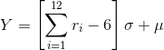

Los métodos convolutivos son métodos que permiten la simulación de una variable aleatoria principal, Y, a través de la suma de otras variables aleatorias X de manera más rápida que a través de otros métodos.
La variable aleatoria normal con media μ y desviación estándar σ puede generarse mediante el teorema del límite central:
Se puede utilizar este método para simular procesos de llenado de botellas, o procesos similares. Para ello es necesario conocer el promedio y la desviación estándar del proceso a simular.